FARM PROJECTS
Over the years we have tried all kinds of projects to live more naturally and use what the farm and the sun give us. Here are some of them.
Solar Well · Solar RV · Vegetable Battery · Compost · Outhouse · Orchard · Community Gardens · Sweat Lodge · Tree Candy
THE SOLAR-POWERED WELL
Here we have a solar-powered well. The 48-volt solar panel powers a satellite tracking unit that lets the panel turn with the sun as it moves across the sky. The panel also powers a charge controller for the 32-volt pump. The pump is attached to a 2-inch well (approx. 75 feet deep) and pumps about 6 gallons per minute in strong sunlight.
The whole unit pumps water into a 6-foot trough. When the water gets to the top, a float switch turns off the pump. When the livestock drink the water down to a certain level, the pump comes back on. The docile cows next door, whom I loan my grass to, enjoy the fresh drink, and after they leave the field I go in and collect free fertilizer for our gardens.
The next project: a 1,500-gallon water tower raised about 25 feet. The water in the tank will give enough pressure to drip-irrigate one of our two gardens by using the power of the sun.
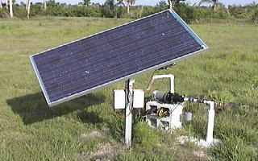
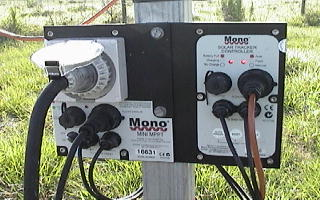
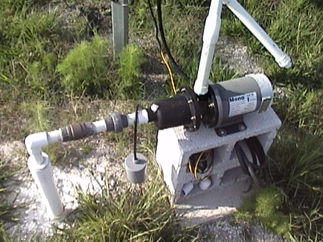
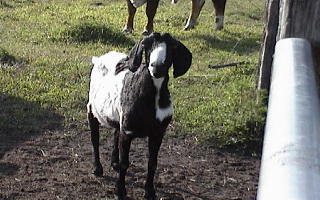
THE SOLAR RV
Three 75-watt solar panels adorn the top of this 1989 Ford F150 conversion van. A lot of people think they look like suitcase racks from the ground; that's when I open the side doors and reveal their true purpose: powering all the 12-volt gadgets I could find that would be useful on the road. This RV has seen many a campsite, and since the solar addition we have never needed to pay for an electrical site, set up a tent or cook in the rain. Camping made easy and powered by the sun.
I built a cabinet to house the fridge and hold water storage above. It also houses three 100-amp-hour solar batteries (a 300 Ah bank) with a power usage display on the front door, plus storage for canned foods, dried goods, first aid and some 12-volt pots and pans. A charge controller regulates the power coming from the panels, and a small grid-tie inverter feeds electricity back into the home, or wherever we park near an outlet. With the inverter and battery bank I can usually recover 3% to 5% of my monthly electric bill. Two AC inverters on the side of the cabinet deliver 110 volts: one clean supply for a laptop or other sensitive electronics, and a larger one for most household appliances.
Because of this project, we have learned a lot more about why we need to conserve energy and how we can make real change in our world just by flipping off a switch. By the way, compact fluorescent lights are great for saving energy and money and reducing pollution. We've replaced every light on our farm with them.
THE FRUIT AND VEGETABLE BATTERY BOARD
I was searching the farm for recyclable objects to build a battery board that would be powered by fruits and vegetables. I must admit it was rather hard to pry the cutting board out of the kitchen once I explained that I absolutely had to drill several holes in it. The old-school science project was once again creeping out from the basement.
By placing a zinc nail and a copper nail into an orange or other fruit, you can take voltage readings to see how much power it can produce. Yes, fresh fruits and vegetables can create power, not only when you eat them, but to power our everyday electronic gadgets. Each fruit produces approximately 0.20 volts (1/5 of a volt), so I linked the veggies together on a board, appropriately wired, to get a higher voltage. Pairs of copper and zinc nails are hammered into the board, and copper wires underneath connect one set of nails to the next. There is space for 15 fruits or vegetables (potatoes last longer!), and long veggies like celery can span several nails, as long as you use two nails at a time.
An open voltage reading of the board fluctuated between 10 and 14 volts, and the multimeter read 2.5 to 3 volts while the flashing L.E.D. lights were plugged in, through a 12-volt connector that accepts a car cell phone charger plug. Some fruits and vegetables have produced around 3 volts for well past a month. Several boards can be linked together to create more power, and if you have a fruit tree that drops a lot of fruit, this is a great way to recycle it and get free energy!
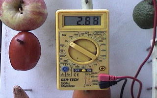
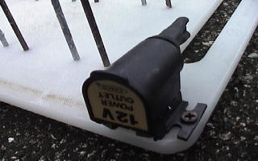
COMPOST AND SOIL STRUCTURE
Ancient shells percolate up from the ground, rich with organic decay. Stones, bones and bits of the past assist the slow, constant grind that mixes these nutrients with those. Soil is the very life base necessary for healthy plant growth: a plethora of microbiotic life, organic matter and minerals slowly break down and add fuel to the soil our plants grow in. Feed the soil, not the plant.
Our plastic 55-gallon drums are relatively inexpensive and make easy compost. Simply put them on their sides and roll them back and forth (with the lid on, of course). We keep composted rabbit, chicken and cow manure, and we have found green manures (kitchen scraps, used coffee grounds, grass clippings and light yard vegetation) to be just as effective as animal manure. Added around the base of a plant or tree, green manures prevent weed growth, retain moisture and eventually break down into micronutrients that feed the root system.
We mix various manures with worm castings, sand, peat moss and soil, depending on what we're planting. Cactus prefer straight sand; acid-loving plants like blueberries get pine needles. Free wood chips are delivered several times a year, and we let the piles break down for a few years before using the composted wood in our soil mix. All compost must be turned to give air to the mix and hasten the composting. Earthworms such as night crawlers and red wigglers are the best form of natural tillage, adding micronutrients as they go.
If you consider all your options, you may find very few logical reasons to use synthetic fertilizers, especially if you're eating what you grow. Organically amended and enriched soil has a slower, more natural N-P-K (nitrogen, phosphorus, potassium) breakdown and increases microbial action in the soil, making a rich base for nature's fantastic tilling machines, worms. Can you dig it?
THE OUTHOUSE
Every farm needs an outhouse. In selecting the wood to build mine, I got the crazy idea that a used portable toilet with a hole cut in the bottom would be a lot less expensive, easy to hose out and a lot less work! We dug a large hole in a sandy hill tucked away in the cherries for privacy, centered a bottomless plastic 55-gallon drum in it with the lip about 4 inches above ground, filled in around it with sand, and set the outhouse over it with a hole cut directly under the seat.
Next to the outhouse we keep a small metal can of hydrated lime. Sprinkle one cup down the hole after each use; it works really well for keeping down the smells and keeping flies away. A small solar panel high up in a tree keeps an old van battery charged, which runs a 12-volt light inside. One does want to see! Stocked with a paper towel dispenser and biodegradable RV toilet paper, it has saved us many a run to the house.
OUR MULTI-CULTURE ORCHARD
Before planting a tree, we cut the grass down to soil level with a weed eater. After the tree is planted, we collect clippings and leaves from the lawn with the riding mower and grass catcher and pile them around the base. These 'doughnuts', as we call them, keep the weeds in check with no need to spray a nasty substance on the ground, retain precious moisture, and break down over time to add nutrients to the soil.
Planting in diversity is the key in small organic farming. Just as planting onions next to tomatoes, or daikon radishes next to mustard greens, helps keep destructive insects away from tender vegetables, multi-culture orchards can have the same positive results. Monoculture degrades soil quality, decreases fruit production over time and may require unnecessary chemical fertilization. Multi-culture practices help beneficial insects thrive, promote bee pollination and give a greater chance of marketable fruits and vegetables.
We now have nearly 300 fruit and nut trees planted on the farm, including over 50 different species. The more the merrier, say we! Many hours are spent mowing, re-mulching and hand-weeding in the summer heat, but soon enough the shade of the canopy will help keep the weeds to a minimum.
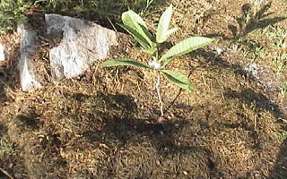
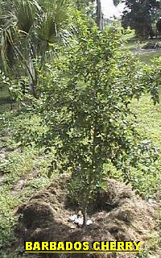
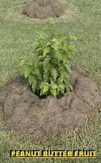
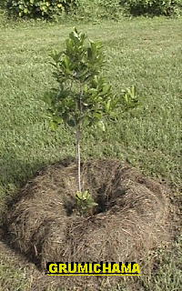
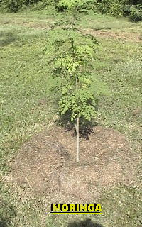
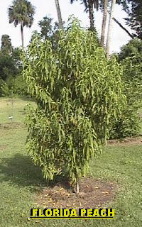
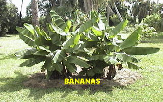
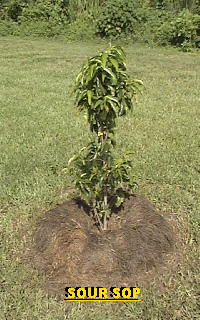
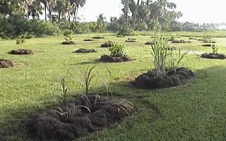
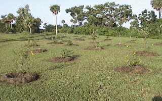
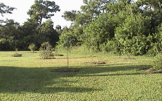
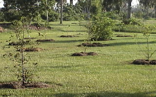
COMMUNITY GARDENS
Our community garden projects have included the PBCC Center for Early Learning Garden and the Lake Worth West Community Center Garden. The Martin County Conservation Alliance's Outstanding Achievement Award honored the farm in part for promoting community gardens.
More gardens are coming to an empty space near you!
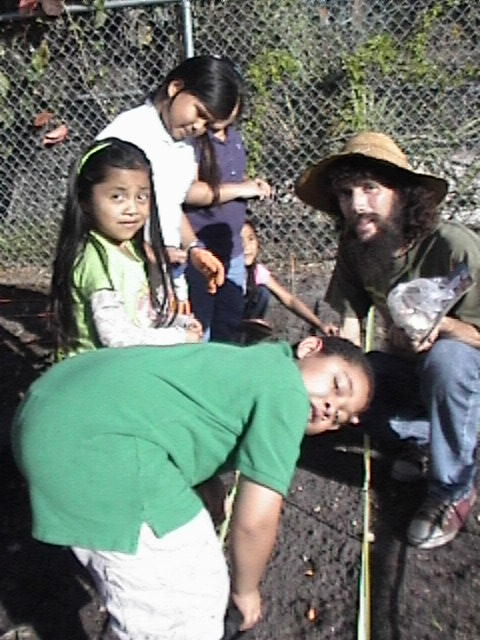
ON-FARM SWEAT LODGE
The farm has hosted an on-farm sweat lodge. Sweats were usually held on or around the full moon every other month, and all excess funds were donated to the Pine Ridge Reservation.
TREE CANDY
Fresh vegetable scraps scattered around a small tree trunk: we call this 'Tree Candy', and it's a simple and useful way to naturally fertilize your plants and trees. Anything like fresh scraps from the kitchen will do (just not a half-eaten bowl of salad with vinaigrette and salt). Eggshells, greens, onion peels and carrot butts all break down over time and feed your tree. Fresh veggie scraps and used coffee grounds make great compost and may also increase beneficial microbes in the soil.
Grass clippings and leaves from the yard provide an excellent N-P-K breakdown over a longer period of time, which is healthier for the plants and the earth than synthetic fertilizers. A small blueberry enjoys the slow breakdown of acids in pine needles, bark and cones placed around its base. Fruit that must be pruned can be used too, and the leftover potatoes after we remove the eyes for planting go around the trees.
It's important that we find new, creative and more natural ways to live in a world where climate change, pollution of our land and waters, and a shrinking supply of natural resources threaten the future for all living things. Recycling can take place anywhere.